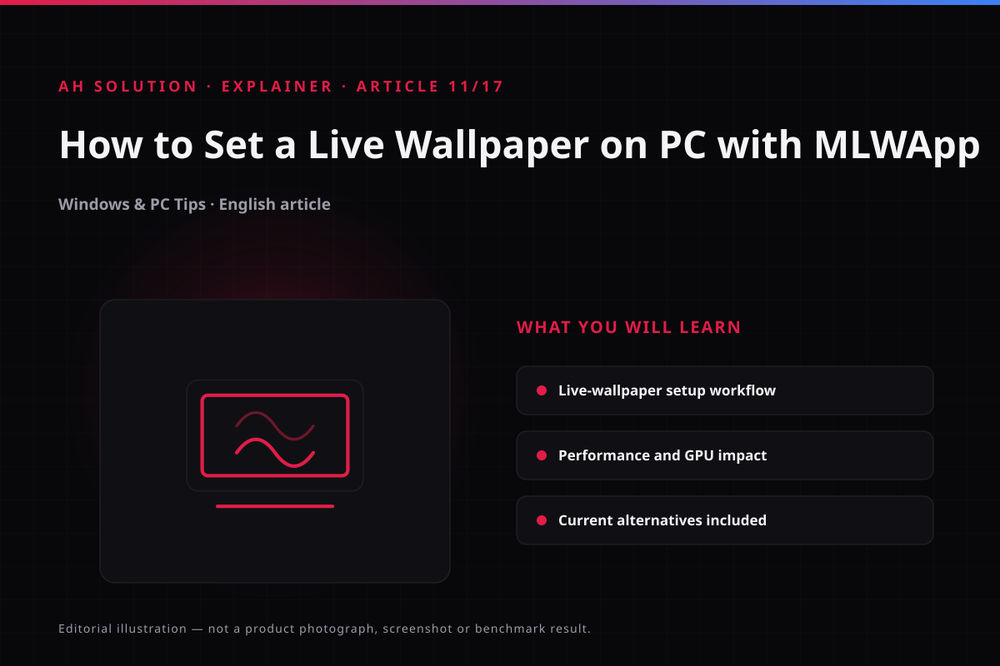

Static wallpaper se desktop thoda boring ho jaata hai. Bahut log chahte hain ki unki screen par koi animated scene chalta rahe - nature video, abstract loop ya favourite clip. Original AH Solution video isi topic par hai: MLWApp ki madad se PC par video wallpaper set karne ka tareeka. Video December 2020 mein publish hua tha, us waqt ye ek popular free option tha.
Is article mein us workflow ko current context ke saath samjhenge. MLWApp ki availability aur interface aaj same nahi reh sakti - isliye verified alternatives - free aur open-source Lively Wallpaper aur paid Wallpaper Engine - aur download source ki safety bhi honestly cover honge.
Original video: How to Set Live Wallpaper on PC Using MLWApp 🔥 | Any Video as Wallpaper Video published: 16 December 2020 · Duration: 03:26
1. Live wallpaper hota kya hai?
Normal wallpaper ek still image hoti hai. Live wallpaper mein desktop background ke peeche video, GIF ya animated scene continuously chalta rehta hai. Windows khud yeh feature nahi deta - iske liye third-party app chahiye jo desktop layer ke upar video render kare.
Video ke time (2020) MLWApp isi kaam ke liye tha: app install karo, video select karo, "apply wallpaper" jaisa option dabao - ho gaya. Aaj ke bhi zyada-tar apps isi same flow par chalte hain, bas button names badal jaate hain.

Live wallpaper ek background application hai - video continuously decode hoti rahti hai, GPU extra kaam karta hai, battery bhi zyada kharch hoti hai. Isliye pause settings zaroori hain.
2. MLWApp ka general workflow
MLWApp (My Live Wallpaper App) ko 2020 video mein step-by-step dikhaya gaya tha. Developer MyLiveWallpapers.com hai, jiski official site mylivewallpapers.com par hi app milta hai. Us workflow ka structure aaj bhi mostly same hai:
- App install karein: Developer ki official website sabse safe source hai. Store listings hatt badal sakti hain - listing mile toh publisher name zaroor check karein.
- Video file select karein: App ke andar wallpaper video choose karein. MP4 jaise common formats zyada-tar support hote hain.
- Wallpaper apply karein: "Set as wallpaper" ya similar option par click karein - desktop background turant video par switch ho jaana chahiye.
- Pause settings configure karein: Battery saver par pause, fullscreen app chalte waqt pause - ye options hon toh zaroor enable karein.
- Check karein: Desktop par jaake verify karein ki video smoothly chal rahi hai.
Aaj ke liye note: MLWApp ki current availability official site se confirm karein - official listing na mile toh random download sites se install bilkul na karein (Safety section mein detail hai).
3. Video file ke liye practical tips
Wallpaper video ka selection system ki smoothness decide karta hai. Ye tips MLWApp aur kisi bhi live wallpaper app par apply hote hain:
- Resolution: 1080p (1920×1080) kaafi hai. 4K videos GPU par zyada load daalti hain aur fullscreen wallpaper par farq barely dikhta hai.
- Loop quality: Video ka ending aur beginning milna chahiye, warna har loop par jump dikhega.
- File size: Bohot badi files slow load hoti hain - chhoti, optimized clip better hai.
- Audio: Wallpaper ka audio normally mute rehta hai.
- Content: Distracting wallpaper concentration affect karti hai - subtle loops better rehte hain.
4. Performance, GPU aur battery par effect
Live wallpaper ka sabse bada trade-off performance hai - video continuously decode hoti rahti hai, chahe aap desktop dekh rahe ho ya nahi (jab tak pause rule trigger na ho). Simple scenes kam leti hain; heavy effects aur 4K zyada.
Laptops ke liye: "pause on battery" sabse zaroori setting hai - charger ke bina kaam karte waqt wallpaper static ho jaana chahiye.
Gaming ke liye: Fullscreen game ke waqt wallpaper peeche chalna pointless hai - almost har achha app fullscreen detect karke wallpaper pause kar deta hai, ye feature on rakhein.
Old PCs: Integrated graphics ya kam RAM wale systems par live wallpaper sluggish feel ho sakta hai - aise case mein static wallpaper hi better hai.
5. Aaj ke current options: MLWApp aur alternatives
Video ke time MLWApp ek option tha, aaj market badal gaya hai:
| App | Type | Availability | Best for |
|---|---|---|---|
| MLWApp | Free | Developer ki official site mylivewallpapers.com (Microsoft Store listing verify karein) | Purana video workflow follow karne walon ke liye |
| Lively Wallpaper | Free & open-source | Microsoft Store par available; official repo GitHub par | Sabse safe free option - video, GIF, web wallpapers |
| Wallpaper Engine | Paid | Steam par sold; price official listing se check karein | Sabse bada community wallpaper library (Steam Workshop) |
Lively Wallpaper humara current recommendation hai free category mein - GPL open-source (code GitHub par publicly auditable), Microsoft Store listing se install hota hai, aur pause-on-battery, fullscreen-pause, multi-monitor jaise features built-in hain. Video, GIF aur web pages sab support hote hain.
Wallpaper Engine paid hai - USP iski Steam Workshop ki community hai, lakhs mein wallpapers milte hain. Price official Steam page par check karein.
Dono apps ka workflow MLWApp wala hi hai - file select, apply, pause rules.
6. Download source: safety pehle
Yeh sabse important section hai. Random download sites sabse zyada risk wali hain - "MLWApp free download" ya "video wallpaper crack" jaise keywords par bundleware, adware ya fake installers milte hain.
- Microsoft Store se install karein jab possible ho - Windows apps verify hote hain aur auto-update milta hai.
- Official developer site se direct installer bhi theek hai, lekin URL khud type karein, search ad se nahi.
- Unknown sites se kabhi na download karein - "free wallpaper pack" ke saath aane wale installers mein malware hota hai.
- Install karte waqt bundled software options uncheck karein.
Safe install checklist hamari guides/live-wallpaper-on-pc.html guide mein hai; wahi principles guides/choose-android-apps-safely.html par Android ke liye apply hote hain.
Troubleshooting aur limitations
- Wallpaper freeze ya black screen: App aur GPU drivers update karlein - kuch baar wallpaper app restart se bhi fix ho jaata hai.
- Wallpaper game ke baad nahi chal rahi: Pause rules check karein - fullscreen pause on rakha hoga toh wallpaper sirf desktop par chalegi.
- Battery zyada ja rahi hai: "Pause on battery" enable karein aur resolution kam karein.
- App Store listing nahi mil rahi: Verified alternatives (Lively) use karein - unofficial mirrors se avoid karein.
- Old PC slow feel ho raha: Live wallpaper hata ke dekhein - farq dikhe toh system iske liye ready nahi hai.
Safety aur privacy
- Permission check: Wallpaper app ko zaroorat se zyada permissions na dein - sirf wallpaper/media access chahiye hota hai.
- Telemetry: Free apps kabhi-kabhi analytics collect karti hain. Open-source options (Lively) ka code publicly check ho sakta hai - isliye FOSS safer maana jaata hai.
- Account/subscription: Kuch apps freemium hain - basic free, wallpapers premium. Kharidne se pehle official listing price confirm karein.
- Source: Hamesha official source se install karein - ye number one rule hai.
Frequently asked questions
Kya live wallpaper PC ki performance kharab karta hai?
Thoda GPU/battery load badhta hai, lekin pause settings on hon toh impact kam hota hai.
MLWApp aaj bhi available hai?
Official site se listing check karein - listings hatt badal sakti hain. Na mile toh free open-source Lively Wallpaper use karein.
Lively Wallpaper sach mein free hai?
Haan - GPL open-source, Microsoft Store par free, koi hidden subscription nahi. Wallpaper Engine paid hai (Steam).
Koi wallpaper video formats support nahi kar rahi toh?
MP4 (H.264) sabse universally supported hai - rare codecs ke liye HandBrake jaise tool se convert kar lein.
Kya live wallpaper data/privacy risk par hai?
Wallpaper app zyada-tar local wallpaper play karti hai - internet ki zaroorat nahi. Risk mostly unverified download sources se hai, app feature se nahi.
Final recommendations
Agar sirf ek baar try karna hai, toh Lively Wallpaper Microsoft Store se install karein - free, open-source aur safe source. Workflow wahi rahega jo MLWApp video mein tha: video select, apply, pause rules. Heavy wallpaper library chahiye toh Wallpaper Engine evaluate karein.
System ke hisaab se settings tune karein: battery pause on, fullscreen pause on aur 1080p se zyada resolution avoid karein. Aur download source verify karna kabhi skip na karein. Detail ke liye hamari guides/live-wallpaper-on-pc.html guide zaroor padhein.
Resources aur official links
- Lively Wallpaper official GitHub repo - source code, releases aur official issue tracker.
- Lively Wallpaper Microsoft Store listing - Windows ke liye verified free install source.
-